Tutorial¶
This tutorial will guide you through some of the most common tasks that can be performed using OpenGeo Explorer.
Prerequisites and data¶
This tutorial assumes that QGIS with OpenGeo Explorer has been already installed. It also assumes a local GeoServer instance and a PostGIS database installed with the parameters set by a standard OpenGeo Suite installation:
- GeoServer running on port 8080 and responding on http://localhost:8080/geoserver/
- PostGIS running on port 5432
You may need to adapt the examples as needed to fit your specific installation.
Next, Download the example data to be used in this tutorial. Extract this archive to a convenient directory.
Connecting to GeoServer¶
To start, launch OpenGeo Explorer by clicking the OpenGeo menu and selecting OpenGeo Explorer. The panel will appear on the right side of your QGIS window.
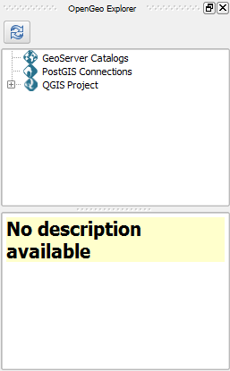OpenGeo Explorer
You will see that the GeoServer Catalogs entry is empty. Click to select it and then click the New catalog button.
Note
The buttons on the toolbar will change depending on the type of element selected in the tree.
Note
You can also right-click on elements in OpenGeo Explorer.
The catalog creation dialog contains the default parameters for a local GeoServer instance.
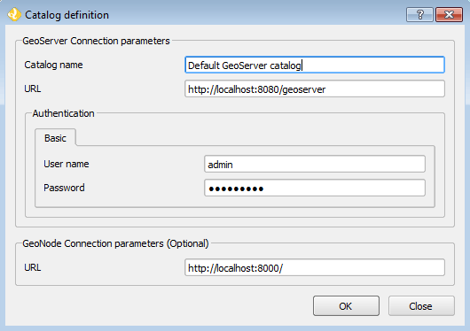Default parameters
There is no need to modify the default values, so just click OK. The new catalog will appear in the GeoServer catalogs branch.
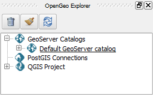Creating a connection to a GeoServer catalog
Note
If you see an error saying “Could not connect to catalog”, make sure that GeoServer is running and on the port specified.
Publishing a QGIS project¶
In order to publish data into the GeoServer connected to in the previous step, we will first create a workspace where we can put our data.
Expand the Default GeoServer catalog tree.
Click the GeoServer Workspaces entry to select it and then click the New workspace button.
Fill out the form in the dialog boxes with the inputs as shown above and click OK.
- Name: quickstart
- URI: http://quickstart
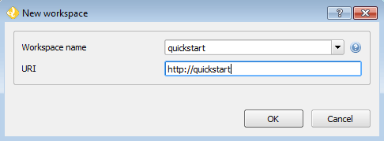Creating a new workspace in GeoServer
Expand the GeoServer Workspaces entry, and the new workspace should now appear in the list.
To make this new workspace the default, select the workspace item, and click the Set as default workspace button.
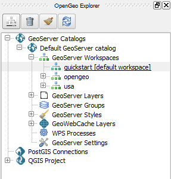Default workspace
Open the QGIS project that is included in the example data (quickstart.qgs). There should be five layers in your project in two groups.
This is what the project will look like:
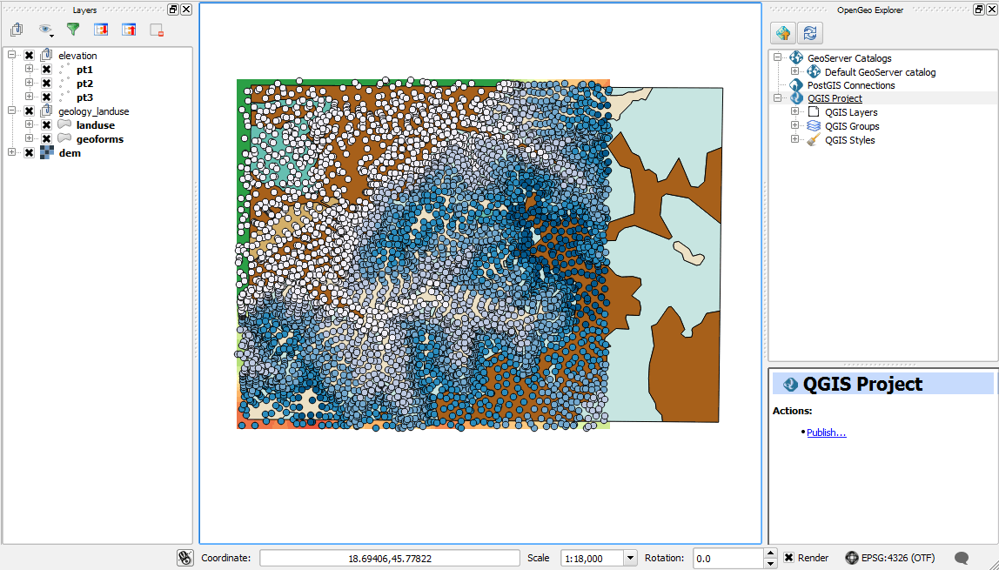Quickstart sample project
It contains the following layers:
We will publish this project to GeoServer as it is, with those layers, groups, and the symbology associated with each layer.
To publish the project as it is, just select the QGIS project entry in the OpenGeo Explorer tree, and then click the Publish... button. You will see the following dialog:
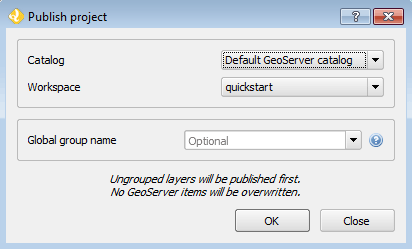Publish project dialog
Select the quickstart workspace as the destination workspace. Make sure the Global group name box is left blank. Click OK to start the publishing process.
For each top-level layer, a dialog will display, giving you an opportunity to rename the layers and layer groups when published to GeoServer. You don’t need to rename anything, so click OK in each of the three dialogs.
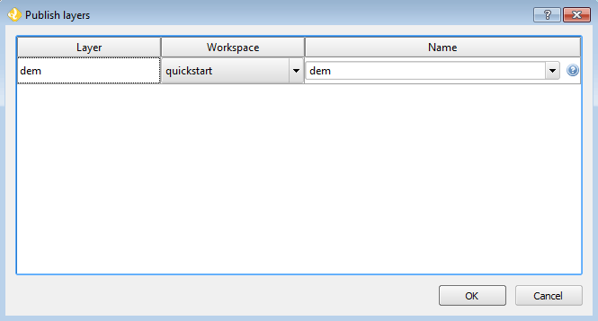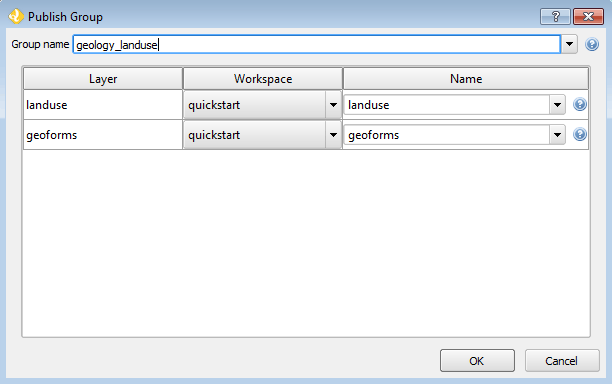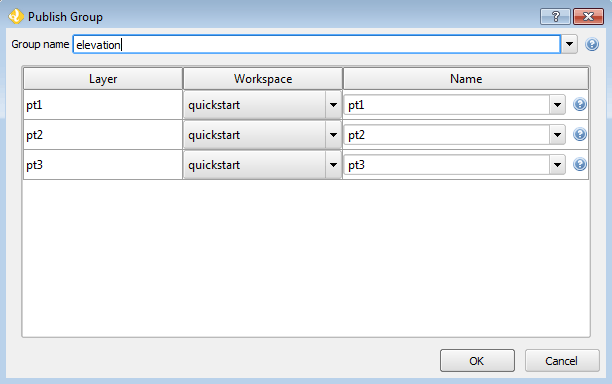Once finished, your catalog should look like this:
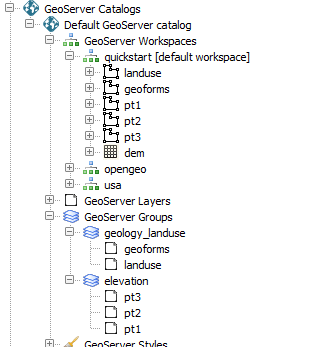GeoServer catalog after published project
A store has been created for each QGIS layer, and also the corresponding GeoServer layers and styles, all in the quickstart workspace. Layers have also been configured to use the corresponding styles.
You can now verify these layers and groups in your GeoServer instance.
Publishing a shapefile¶
The sample data contains a shapefile named pt4.shp that was not included in the QGIS project. We will add it to the already-published content. It is not necessary to open/view the layer in QGIS to publish it to GeoServer.
Open the QGIS Browser (View ‣ Panels ‣ Browser if it is not already open) and locate the shapefile.
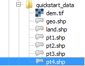File in the QGIS Browser
Click to select the file and drag it onto the GeoServer Workspaces catalog item in the OpenGeo Explorer tree.
A dialog will display, asking you to name the layer. Click OK.
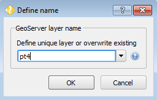Shapefile upload dialog
Note
As the quickstart workspace was set as the default, the layer will be added to that workspace. If you want to publish into another workspace, drag and drop the file on to the corresponding workspace entry.
The shapefile is now published in GeoServer, but is not currently added to the QGIS project, so it won’t be displayed in the map window.
In this case, we want the layer to have the same style as the other layers we uploaded (which themselves all share the same styling), so we can reuse one of the uploaded styles. To change the style, expand the tree and select the pt4 layer in the GeoServer Layers list (not GeoServer Workspaces). Then click the Add style to layer button.
Select the pt1 style in the list. Make sure to check the Add as default style option as well.
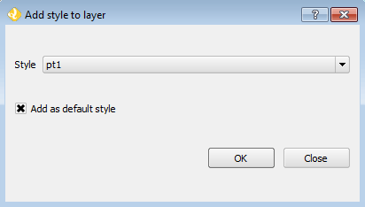Add style to layer dialog
Note
You can also accomplish the same action by dragging the pt1 style onto the layer item. That will not make it the default style, but you can then select it and click the Set as default style button.
Click OK.
While it’s not necessary, we can now remove the original style. This can be done by right-clicking the pt4 style inside the pt4 layer and selecting Remove style from layer. You can also delete it from the catalog itself (as it is not used by any other layer) by clicking the pt4 element in the GeoServer Styles branch and then clicking the Delete button.
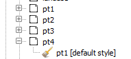
Editing a style¶
One of the most interesting features of the OpenGeo Explorer plugin is that you can use QGIS to create your styles, and then publish them directly to GeoServer. This means that you have access to all of graphical editing capabilities in QGIS, without the need to edit SLD code.
While the project already has a style for each of its layers, you can also directly edit any GeoServer style without it being part of a QGIS project. We will show that below, by editing the style of the landuse layer in GeoServer.
In the OpenGeo Explorer tree, locate the landuse layer in GeoServer Layers. Under it, you should see the list of styles associated with the layer, which in this case will only be the landuse style.
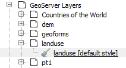Style associated with the layer
Select the style and click the Edit button. This will open the QGIS symbology dialog, where you can make the changes you want to your style. When you close it, the style in your GeoServer catalog will be updated.
Note
There is also an Edit SLD option, but that is a different task.
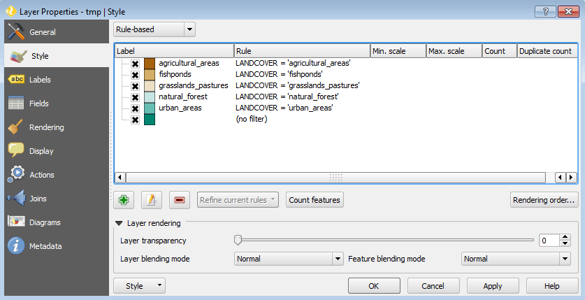QGIS style editor
Let’s make some small edits to this style. In the QGIS style dialog, double click the agricultural_areas row.
In the Style properties dialog, click the Color button and change the color.
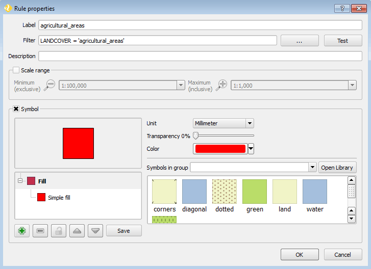Style rule with a changed color (purple)
Click OK.
Delete the bottom rule that contains (no filter). Click to select it and click the Remove rule button (the red minus).
Click OK.
The style has been changed in GeoServer. This can be verified in OpenGeo Explorer by selecting the same style and clicking the Edit SLD button and viewing the style code. It can also be viewed in GeoServer’s Layer Preview.
Note
The style change will not be reflected in the QGIS viewing window, because it is reading from the local project and not from GeoServer.
Original landuse style
Changed landuse style
Publishing from PostGIS¶
You can also create layers in GeoServer based on database tables, all through OpenGeo Explorer.
We will see this by first importing those shapefiles into a PostGIS database, and then creating layers.
First create a database named quickstart. Make sure this database is spatially enabled.
Note
The details of this step are beyond the scope of this tutorial, as it must be done outside of QGIS using PostgreSQL command-line utilities like psql or the pgAdmin utility. An example using the command line would look like this:
createdb -U postgres quickstart psql -U postgres -d quickstart -c "create extension postgis;"
Connect to the database using the OpenGeo Explorer by selecting PostGIS connections and then clicking the New connection button.
Leave all fields in the form as defaults. Add quickstart in the Database field.
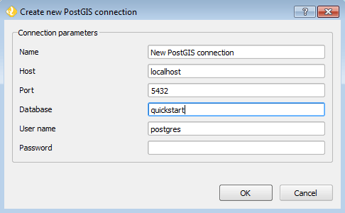Set the parameters of the connection and click OK. The database should appear in the tree.
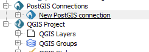Expand the tree and select the schema where you want to import your data (usually called public).
Click the Import files button.
In the resulting dialog, click the button in the upper part of the dialog to select the files to import. Select the pt1.shp, pt2.shp, and pt3.shp files. Set the name of the Table to elevation, and check the Add to table (do not overwrite) box. This will cause all files to be imported to a single table named elevation and not as three separate tables.
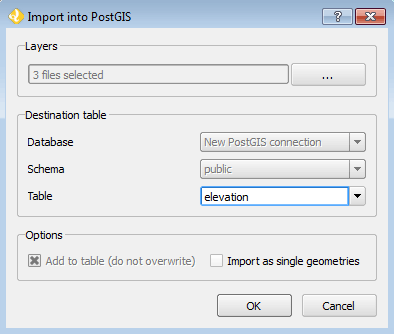Click OK.
The data will be imported. To create a GeoServer layer from that table, drag and drop the elevation entry onto GeoServer Workspaces, just like when importing the shapefile above.
Viewing the combined elevation table in QGIS.
Publishing a TIF file¶
Raster layers are published in a similar way to vector layers. The example data includes a raster layer named dem.tif` that can be uploaded to GeoServer in the two ways we’ve seen before:
- Drag file name from the QGIS Browser to GeoServer Workspaces.
- Add to the current project, then select the layer in the QGIS Layers list in OpenGeo Explorer and click Publish.
In either case, a new raster store will be created in the catalog, and the corresponding layer will be published.
Note
This file was already part of the project that was uploaded, so if publishing again, you will need to rename the layer, or the existing layer will be overwritten.
Overwriting a layer during publish
When publishing directly from the file, a default style will be used. Single-band layers will use a black-to-white color ramp, and all other layers are assumed to be 3-band RGB color images.
Caching¶
Once data is in the GeoServer catalog, we can use OpenGeo Explorer to seed the tile cache of a particular layer.
In the GeoWebCache Layers entry, you will see a list of every cached layer in GeoServer:
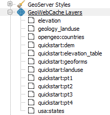Cached layers
Select the elevation_table layer (from PostGIS) and click the Seed button. You will see a dialog to define the seeding task to perform, along with all parameters, as shown in the figure below:
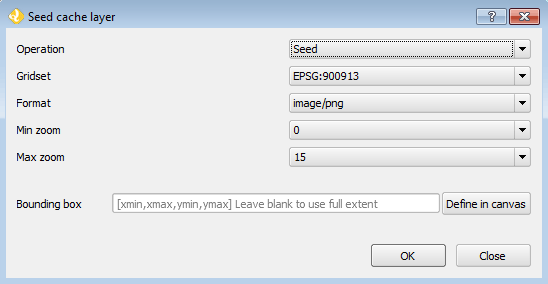Seed dialog
Click OK to start the seeding process. The description panel of the layer entry will change to reflect that a seeding operation has been launched.
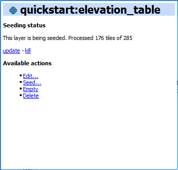The description is not updated automatically, but you can click the Update link to refresh the view or the Kill link to abort the seeding operation.
Table Of Contents
This Page
About Boundless
Boundless provides commercial open source software for internet mapping and geospatial application development. We are dedicated to the growth and support of open source software.
License
This work is licensed under a Creative Commons Attribution-Share Alike 3.0 United States License. Feel free to use this material, but we ask that you please retain the Boundless branding, logos and style.